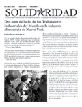

Submitted on Tue, 11/13/2007 - 2:49pm
Disclaimer - The opinions of the author do not necessarily match those of the IWW. The image pictured to the right did not appear in the original article, we have added it here to provide a visual perspective. This article is reposted in accordance to Fair Use guidelines.
By: John S. Adams - Missolua Independent, November 8, 2007
 It wasn’t as dramatic as the “Continental Congress of the Working Class” that formed the union in 1905, but for the handful of people who turned up at the monthly meeting of the Industrial Workers of World (IWW) at Missoula’s Union Club on Monday night, it was a momentous occasion.
It wasn’t as dramatic as the “Continental Congress of the Working Class” that formed the union in 1905, but for the handful of people who turned up at the monthly meeting of the Industrial Workers of World (IWW) at Missoula’s Union Club on Monday night, it was a momentous occasion.
For the first time in as long as anyone can remember, the Missoula-based branch of the “One Big Union” reached the minimum 10 members, thus earning their official charter. Sure, it’s only 10 members, but for Jay Bostrom, the local IWW’s most active and outspoken member, it’s a big deal.
“Folks, now we can start keeping some membership dues and start doing some real organizing,” Bostrom told the small group gathered in the Union Club’s basement.
The IWW rose to prominence in Montana in the early part of the 20th century with efforts to organize miners in Butte, and lumberjacks across the state. Their “Free Speech Fights” in Missoula and Spokane made national headlines as Wobblies (as IWW members are known) spoke out against capitalist repression until they were arrested by the hundreds, clogging the jails and courts and eventually forcing those cities to overturn their free speech ordinances. Today the IWW boasts about 1,000 members worldwide.
The Wobblies’ core philosophy, according to the preamble to the IWW constitution, declares that “the working class and the employing class have nothing in common.” Rather than organizing workers by trade, the IWW seeks to unite all workers as a class in order to rise up and take over means of industrial production and eventually overthrowing capitalism and creating a more peaceful society.
A lofty goal to be sure, but for the few energized members who showed up Monday night to plan a free speech fight of their own against international free trade agreements, you’ve got to start somewhere.
“I see our role as more broadening the discourse to the left,” says Dave Jones, the group’s spokesman. “There really hasn’t been an anti-capitalist movement around here for a long time.”
Submitted on Wed, 10/31/2007 - 7:55pm
 . . .but your continued solidarity is essential!
. . .but your continued solidarity is essential!
What you can do to support the Shattuck Union:
(1) Email the owner, Mark Cuban and tell him to respect workers rights - Mark Cuban's website where you can contact him is blogmaveric.com
(2) Email the company and demand better working conditions: <customerservice@landmarktheaters.com>
(3) Join the IWW and organize your theater. For information about organizing, please visit this page.
(4) Visit the Shattuck Cinema, in Berkeley, and tell the workers you support them.
(5) Contact the Bay Area IWW and ask us for further ideas for providing solidarity and support.
Submitted on Fri, 10/26/2007 - 4:55pm
Current Classes
Updated October 2007 
Chomsky 101: An Introduction to Noam Chomsky's Life and Political Thought.
FW Facilitator Stephen Holm
This 6-part class will introduce participants to the thinking and writing of one of America’s preeminent dissidents- the MIT Linguistics professor, Wobbly, and anarchist Noam Chomsky.
Themes covered will include Media and Propaganda; U.S imperialism around the world; and the anarchist alternative. There will be short readings and group discussion.
Chomsky 101 meets Saturdays
November 17th - December 22nd 2007 11:00 am - 1:00 pm
Downtown Minneapolis Public Library
4th Floor, Conference Room N-402
Submitted on Tue, 10/23/2007 - 3:38pm
Con:
- Dos años de lucha de la IWW en la industria alimenticia de Nueva York
- Miembros de la IWW usan acción directa para ganar sus demandas y restablecer condiciones laborales en la recoleccion del reciclaje de Berkeley, California
- Por una alianza de trabajadores textiles de Bangla Desh, América Latina y del norte. IWW se reúne con la Federación Nacional de Trabajadores Textiles (NGWF) de Bangladesh
PDF File
Submitted on Tue, 10/23/2007 - 2:58pm
Featuring:
- Two years of IWW organizing in the New York food industry
- IWW members use direct action to win demands and re-establish working conditions in recycling collection, Berkeley, California
- For an alliance of Bangladeshi, Latin American and North American garment workers: the IWW meets with the National Garment Workers Federation of Bangladesh
PDF File